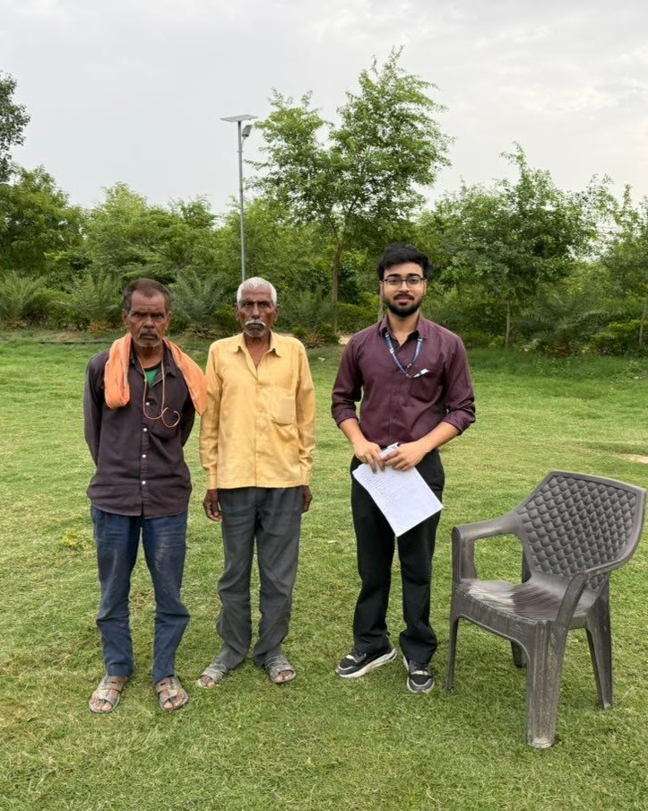

About
ABOUT ARKRAJ
My path into environmental research has not been completely linear — and I think that is one of the things that has shaped how I approach research.
I started with Agricultural Sciences, where I was introduced to land, crops, rural systems and the practical side of working with natural resources. During my M.Sc. in Earth and Atmospheric Sciences at Banaras Hindu University, my interests gradually moved toward broader environmental questions, particularly climate, spatial analysis and changing landscapes.
Since then, I have worked across research, sustainability and environmental policy. I currently work as a Research Associate with National CAMPA under the Ministry of Environment, Forest and Climate Change, where my work involves environmental analysis, monitoring, policy evaluation and documentation.
I am particularly interested in the point where scientific evidence becomes useful beyond a research paper — in planning, policy, conservation and decisions on the ground.
Research, for me, happens both through data and through being present in the field.

- StartAgricultural SciencesUAS Dharwad
- ThenEarth & Atmospheric SciencesBHU · M.Sc.
- ExpandedGIS · Remote Sensing · SustainabilityEcoServeDev · Project Lead
- NowUrban Forestry · PolicyNational CAMPA · MoEF&CC
Research interests
Climate & Environmental Change
Climate variability, environmental change and the ways these processes affect landscapes and human systems.
Urban Environment
Urban heat, green spaces, urban development and the environmental conditions of cities.
Remote Sensing & GIS
Using satellite imagery, spatial analysis and mapping to study environmental change.
Forestry & Urban Forestry
Understanding the ecological, climatic and social value of urban forests and green spaces.
Sustainability & Environmental Policy
Bringing environmental evidence into policy, planning and implementation.
How I work
I like working with both the larger picture and the smaller details. A satellite image can show a pattern across a city, but understanding that pattern often requires looking at what is happening on the ground as well.
My work therefore moves between spatial data, quantitative analysis, field evidence and policy documents. I use these approaches differently depending on the question rather than forcing every problem into the same method.
Tools & methods
Geospatial
- QGIS
- ArcGIS Pro
- GIS
- Remote Sensing
Programming & Analysis
- Python
- R
- Environmental Data Analysis
Research
- Field Research
- Environmental Assessment
- Policy Evaluation
Experience
- Feb 2026 – PresentResearch Associate — National CAMPA, MoEF&CC
Environmental analysis, monitoring, policy evaluation and documentation supporting evidence-based climate and forestry governance.
- Sep 2024 – Dec 2025Project Lead — Sustainability, EcoServeDev
Worked across research, planning, ideation and implementation, with a focus on sustainability-oriented projects and improving project efficiency.
Education
- OngoingPost Graduate Diploma in Environmental Law and Policy
WWF & National Law University, Delhi.
- DiplomaDiploma in International Affairs and Diplomacy
Indian Institute of Governance and Leadership.
- M.Sc.M.Sc. in Earth & Atmospheric Sciences
Banaras Hindu University.
- B.Sc. (Hons.)B.Sc. (Hons.) Agricultural Sciences
University of Agricultural Sciences, Dharwad.
I am still figuring things out, learning new tools and moving into new questions. That is part of the reason I wanted this website — not just as a portfolio, but as a place to bring my research, writing and ongoing work together.